1. Introduction
1.1 What is FizziQ?
FizziQ transforms your smartphone or tablet into a true portable scientific laboratory. The app uses the many built-in sensors in your device to conduct physics, chemistry, and life and earth science experiments.
1.2 Who is FizziQ for?
- Students: from middle school to high school, to discover science interactively
- Teachers: to prepare and lead practical work sessions
- Curious minds: to explore the world around us with a scientific perspective
1.3 App Philosophy
FizziQ is inspired by the scientific method:
Observe
Use sensors to measure phenomena
Question
Formulate hypotheses
Experiment
Record data
Analyze
Interpret results
Communicate
Share discoveries
1.4 Available Languages
FizziQ is available in 20 languages: French, English, Spanish, Portuguese, German, Italian, Dutch, Swedish, Norwegian, Danish, Finnish, Hungarian, Estonian, Romanian, Ukrainian, Russian, Turkish, Arabic, and Malagasy.
1.5 Safety Precautions
Using FizziQ to conduct scientific experiments requires following certain essential precautions.
Protect your device
- Use an appropriate protective case
- Do not expose the device to liquids or extreme temperatures
- Securely attach the device during motion experiments
- Do not subject the device to violent impacts
Protect others
- Do not throw objects toward other people
- Warn people around you before conducting a motion experiment
- Clear the workspace of obstacles
Protect yourself
- Do not take measurements in dangerous locations (roadside, heights, etc.)
- Do not conduct experiments that could injure you
- Stay aware of your surroundings during measurements
1.6 Recommendations for Using FizziQ in Class
1. Be confident
The FizziQ app was designed for students, and its interface is similar to other digital tools they use daily.
2. Put devices in airplane mode
FizziQ does not need Internet access to work. In airplane mode, students will not be distracted by notifications and messages.
3. Encourage group work
Group work allows students less familiar with digital tools to learn the app while benefiting from others' discoveries.
4. Let students familiarize themselves with the tool
During the first session, plan 10 to 15 minutes for students to familiarize themselves with the different features.
5. Choose an appropriate protocol
For your first session, choose a protocol that requires only one measuring instrument. You will find many examples at www.fizziq.org/protocoles.
6. Request a report
FizziQ allows students to easily create synthetic documents including graphs, text, photos, and tables.
2. Getting Started
2.1 Installation
FizziQ is available for free on:
- iOS: App Store (iPhone and iPad)
- Android: Google Play Store
- Web: FizziQ Web (browser version)
2.2 First Launch
On first launch, FizziQ:
- Automatically detects available sensors on your device
- Requests necessary permissions (microphone, camera, location)
- Displays the home screen
2.3 Required Permissions
| Permission | Use |
|---|---|
| Microphone | Sound level meter, frequency analyzer, amplitude (oscilloscope) |
| Camera | Colorimeter, photos, kinematic analysis |
| Location | GPS (latitude, longitude, altitude, speed) |
| Storage | Saving notebooks and export |
| Bluetooth | Connection to FizziQ Connect sensors |
2.4 Home Screen Structure
The home screen displays five tabs at the bottom of the screen:
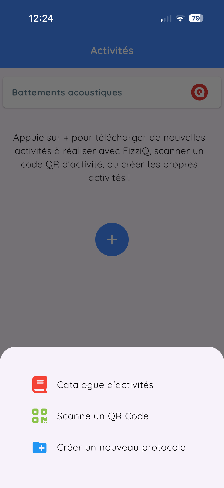
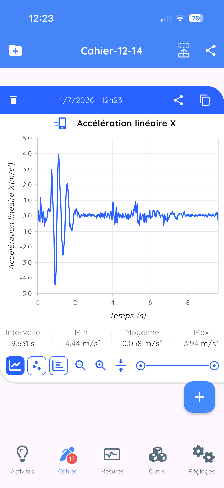


| Tab | Description |
|---|---|
| Activities | Experimental protocols and educational resources |
| Notebook | View and manage your observations |
| Measurements | Access to sensors and measurement tools |
| Tools | Synthesizer, library, calculator, etc. |
| Settings | Settings and configuration |
3. The Main Interface
3.1 The Measurements Tab
This is the heart of FizziQ. This screen allows you to:
- Select one or two measuring instruments
- Visualize data in real time
- Record observations
Selecting an instrument
- At the top of the screen, you see the name of the active instrument
- Tap on this name: the instruments menu opens
- The menu displays instrument categories
- Tap on a category to expand it
- Tap on the desired instrument to select it
- The menu closes and the display updates
- The interface color changes according to the instrument
3.2 The Notebook Tab
The experiment notebook contains all your observations, displayed as observation cards. Each card can contain:
- Data (graphs recorded by sensors)
- Data tables
- Photos and images
- Notes and text comments
Navigating the notebook
- Scroll: swipe vertically to browse cards
- Select: tap on a card to see it in detail
- Reorganize: long press then drag
- Delete: swipe left or use the menu
3.3 The Tools Tab
Access to complementary tools:
- Sound synthesizer
- Color synthesis
- Sound library
- Scientific calculator
- Automatic stopwatches
- Triggers
- AskFizziQ (AI assistant)
3.4 The Activities Tab
- Download educational activities
- Read configuration QR codes
- Access the resource database
3.5 The Settings Tab
The Settings tab allows you to customize the app behavior:
- Data: sampling frequency, signal filtering, quadratic adjustment
- Settings: screen orientation, sensor organization (by instrument or by theme), language
- Camera: LED for colorimetry, photo saving, camera selection
- Calibration: magnetometer and sound level meter adjustment
- System status: available sensors, app version, device information
4. Measuring Instruments
FizziQ offers more than 50 measuring instruments. The menu can be organized by instrument or by theme.
4.1 Instrument Menu Organization
Default organization: by measuring instrument
| Category | Description |
|---|---|
| External sensors | FizziQ Connect Bluetooth sensors |
| Accelerometer | Acceleration measurements (linear, with g, absolute) |
| Kinematic analysis | Video and chronophotography |
| Microphone | Sound level meter, frequency, amplitude, spectrograph |
| Light meter | Light intensity measurement |
| Colorimeter | Color analysis (RGB, HSL, name) |
| GPS | Position, altitude, speed |
| Compass | Direction relative to magnetic north |
| Inclinometer | Tilt angles |
| Theodolite | Horizontal and vertical bearings |
| Magnetometer | Magnetic field |
| Gyroscope | Rotation speed |
| Barometer | Atmospheric pressure |
| Pedometer | Step counter |
Alternative organization: by theme
In Settings > Organize by theme, you can enable thematic organization:
| Theme | Included instruments |
|---|---|
| Kinematic analysis | Video, chronophotography |
| Sound | Sound level meter, frequency, amplitude, spectrograph |
| Motion | Accelerometer, gyroscope, pedometer |
| Light | Light meter, colorimeter |
| Position | GPS (latitude, longitude, altitude, speed) |
| Orientation | Compass, inclinometer, theodolite |
| Magnetism | Magnetometer |
| Environment | Barometer |
4.2 Microphone
The smartphone microphone allows several types of acoustic measurements.
Sound Level Meter
- Measurement: Sound level in decibels (dB)
- Range: 0 to 110 dB
- Use: Measure the sound volume of an environment
- Examples: Noise pollution, acoustic insulation, sound comparison
Dominant Frequency
- Measurement: Main sound frequency in Hertz (Hz)
- Range: 50 to 10,000 Hz
- Use: Identify the note played by an instrument
- Examples: Tune an instrument, study the human voice
Amplitude (oscilloscope view)
- Display: Real-time audio signal (waveform)
- Range: 0 to 10,000 ms or 0 to 100 ms (switchable)
- Use: Visualize the sound waveform
- Examples: Compare pure and complex sounds, observe beats
Spectrograph
- Display: Frequency spectrum of sound (FFT)
- Range: 0 to 5,000 Hz
- Use: Analyze harmonic composition
- Examples: Instrument timbre, voice analysis
Noise Level
- Measurement: Average ambient sound level (dB)
- Range: 0 to 110 dB
- Use: Measure average ambient noise in an environment
4.3 Accelerometer
The accelerometer measures accelerations experienced by the phone.
Linear Accelerometer X, Y, Z
- Measurement: Acceleration without gravity (m/s2)
- Axes: X (front-back), Y (left-right), Z (up-down)
- Examples: Free fall, oscillations, impacts
Accelerometer with gravity
- Measurement: Total acceleration including g (m/s2)
- At rest value: approx. 9.81 m/s2 (vertically)
Absolute Acceleration X, Y, Z
- Measurement: Acceleration in the Earth reference frame (m/s2)
- Difference: Independent of phone orientation
4.4 Gyroscope
- Measurement: Rotation speed (deg/s or rad/s)
- Axes: X (roll), Y (pitch), Z (yaw)
- Examples: Spinning top rotation, pendulum motion
4.5 Pedometer
- Measurement: Cumulative step count
- Examples: Stride study, distance calculation
4.6 Compass
- Measurement: Direction relative to magnetic north (deg)
- Range: 0 to 360 degrees
- Note: Hold the phone horizontally for accurate measurement
4.7 Inclinometer
Front-back inclinometer (pitch)
- Measurement: Longitudinal tilt angle (deg)
- Range: -90 to +90 degrees
Lateral inclinometer (roll)
- Measurement: Transverse tilt angle (deg)
- Range: -90 to +90 degrees
4.8 Theodolite
Horizontal bearing (Azimuth)
- Measurement: Direction of an object relative to north (deg)
- Range: 0 to 360 degrees
Vertical bearing (Elevation)
- Measurement: Angle above or below the horizon (deg)
- Range: -90 deg (nadir) to +90 deg (zenith)
4.9 GPS
| Measurement | Description |
|---|---|
| Latitude | North-south position (-90 to +90 degrees) |
| Longitude | East-west position (-180 to +180 degrees) |
| Altitude | Height above sea level (m) |
| GPS Speed | Travel speed (m/s or km/h) |
| GPS Accuracy | Position uncertainty (m) |
4.10 Magnetometer
- Magnetometer (magnitude): Total magnetic field intensity (uT)
- Earth value: approx. 25 to 65 uT depending on location
- Magnetometer X, Y, Z: Magnetic field components
- Magnetic angle: Horizontal magnetic field direction
4.11 Light Meter
- Measurement: Illuminance in lux
- Range: 0 to 100,000+ lux
| Situation | Typical illuminance |
|---|---|
| Moonless night | 0.001 lux |
| Full moon | 0.25 lux |
| Indoor lighting | 300-500 lux |
| Cloudy day | 10,000 lux |
| Full sunlight | 100,000 lux |
4.12 Colorimeter
The colorimeter uses the camera to analyze colors.
| Measurement | Description |
|---|---|
| Color (name) | Name of detected color |
| Hue (H) | Position on color wheel (0 to 360 degrees) |
| Saturation (S) | Color purity (0% to 100%) |
| Lightness (L) | Color brightness (0% to 100%) |
| R, G, B Intensity | Red, green, blue components (0-255) |
| Absorbance | Optical absorbance (spectrophotometry) |
4.13 Barometer
- Measurement: Pressure in hectopascals (hPa) or millibars
- Standard value: 1013.25 hPa at sea level
- Variation: approx. -12 hPa per 100 m altitude
- Note: Available only on certain devices
4.14 Kinematic Analysis
Video kinematics
- Function: Analyze motion in a video
- Measurements: Position (x, y), velocity, acceleration
Chronophotography
- Function: Analyze motion in a photo
- Measurements: Position (x, y), Velocity (Vx, Vy, V), Acceleration (Ax, Ay, A), Rotation (alpha), Energy (Ek, Ep, Em)
5. Measurement Display - First Steps
5.1 Accessing the Measurement Screen
From the home screen
- Look at the bottom bar of the screen
- Tap on the Measurements tab
- The instruments menu is displayed
Selecting an instrument
- Tap on a category (e.g., Accelerometer)
- The category expands and displays available instruments
- Tap on the desired instrument (e.g., Acceleration X)
- The measurement screen is displayed
5.2 The Measurement Screen

Screen elements
1. Top bar
- Back arrow : return to instruments menu
- Instrument name: indicates the active instrument
2. Circular dial (main display)
- Numerical value: real-time measurement
- Unit: unit of measurement
- The value updates continuously
3. Real-time graph
- Displays the measurement evolution over time
- The graph scrolls from right to left
4. Action buttons (at the bottom)
- Capture button: capture an instant measurement
- REC button: start continuous recording
5.3 Practical Example: Measuring Acceleration
Step 1: Select the accelerometer
- Tap on the Measurements tab
- Tap on Accelerometer
- Tap on Acceleration X
Step 2: Observe the measurement screen
- The dial displays a value close to 0 m/s2 if the phone is stationary
- The graph shows a flat line
Step 3: Take a measurement
- Gently shake the phone left and right
- Observe the dial: the value changes
- Observe the graph: a wavy curve appears
5.4 Changing Instruments
From the measurement screen, several methods:
- Method 1: Back arrow at top left
- Method 2: Tap on the circular dial
- Method 3: Tap on the graph
6. Recording Measurements
6.1 Recording Types
| Mode | Description | Result |
|---|---|---|
| Continuous | Records data as a function of time | Graph in notebook |
| Instant | Captures a single value | "Spot" card with value |
| Dual sensor | Records two quantities simultaneously | X-Y graph |
6.2 Continuous Recording

Recording procedure
- Check that the desired instrument is displayed
- Locate the red "REC" button at the bottom of the screen
- Tap on "REC" to start recording
- The graph turns red, a clock is displayed
- Perform your experiment during recording
- Tap on "STOP" to stop
- The observation is automatically added to the notebook
6.3 Instant Measurement (spot capture)
- Check that the desired instrument is displayed
- Observe the displayed value in the dial
- Wait for the value to stabilize
- Tap on the capture button
- An instant observation card is added to the notebook
6.4 Dual Sensor Mode (Duo)
Duo mode allows you to display and record two instruments simultaneously.

Activating Duo mode
- Tap on the Tools tab
- Tap on Top screen
- Return to the measurement screen: two dials are displayed
- Tap on the second dial to choose the second instrument
Usage examples
- Trajectory: Acceleration X vs Acceleration Y
- Kinematics: Position vs Time
- Electricity: Voltage vs Current (with external sensors)
6.5 Automatic Stopwatches and Triggers
These tools are accessible from the Tools tab.
- Stopwatches: measure time between two events
- Triggers: trigger an action when a condition is met
6.6 Recording Settings
Sampling frequency
The standard sampling frequency corresponds to the maximum frequency for the selected sensor. This frequency can be configured in Settings > Data.
| Sensor | Maximum frequency |
|---|---|
| Microphone (oscilloscope) | Up to 40,000 Hz |
| Accelerometer | 50-100 Hz |
| Gyroscope | 50-100 Hz |
| Colorimeter | 20-40 Hz |
| GPS | 1 Hz |
| Barometer | 1 Hz |
Maximum recording duration
- At 100 Hz: 5000 / 100 = 50 seconds
- At 10 Hz: 5000 / 10 = 500 seconds (approx. 8 minutes)
- At 1 Hz: 5000 / 1 = 5000 seconds (approx. 83 minutes)
7. The Experiment Notebook
7.1 Notebook Concept
The experiment notebook works like a digital scientific logbook. It contains all your observations in the form of observation cards.
Each card can contain:
- Data: graphs recorded by sensors
- Tables: organized numerical data
- Photos: images taken during the experiment
- Text: notes, comments, hypotheses, conclusions
7.2 Observation Card Types
| Type | Description |
|---|---|
| Graph (single) | One quantity as a function of time |
| Graph (double) | Two quantities, overlay or X-Y mode |
| Instant (spot) | Single captured value |
| Text | Free text area, LaTeX formulas |
| Photo | Image with rotation option |
| Table | Data with automatic formulas |
| Spreadsheet | Full integrated mini spreadsheet |
7.3 Card Management
Renaming a card
It is very important to name the different cards explicitly. This allows students to easily find their way in their experiment notebook and properly document their experimentation session.
How to rename a card
- Open the card in full screen
- Tap on the card title
- Type the new name
- Confirm
Reorganizing cards
- Tap on the reorganize icon at the top
- Long press on a card then drag it
- Release to drop
Deleting a card
- Method 1: Swipe left, then Delete button
- Method 2: Menu, then Delete
7.4 Adding Observation Cards

There are several ways to add observation cards to your notebook:
From the measurement screen
Return to the Measurements tab and take new measurements. These will be automatically added to the notebook.
From the floating + button
Tap on the floating + button (square) located at the bottom right of the notebook window. This button allows you to add:
| Option | Description |
|---|---|
| Text | Add a text card to note your observations |
| Table | Create a data table |
| Camera | Take a photo and add it to the notebook |
| Gallery | Add an image from your photo gallery |
| Observation | Import a measurement via QR code from another device |
| Instrument | Return to measurement screen to take a new measurement |
7.5 Exporting and Sharing Observation Data

To export observation data, open the card in full screen then tap on the share icon.
| Option | Description |
|---|---|
| QR Code | Instant sharing between smartphones, works without Internet |
| CSV | For Excel, LibreOffice, Google Sheets |
| Python | Export for Python analysis |
| Image | PNG capture for inserting in Word |
| Add to notebook | Copy to another notebook |
7.6 Exporting and Sharing the Notebook

To export the entire notebook, tap on the share icon located at the top right, in the banner displaying the notebook name.
Export options
| Format | Description |
|---|---|
| Formatted document with customizable layout | |
| CSV | All data in spreadsheet format |
| Python | Export for Python analysis |
| Share notebook | Share complete .fizziq file |
Notebook PDF Export


When exporting to PDF, FizziQ asks you:
- Notebook name: title that will appear on the document
- Author: document author name
- Number of columns: between 1 and 3 columns per page
Once the PDF is generated, you can share it through all available means on your smartphone: email, WhatsApp, Messages, or save it to the cloud (Google Drive, iCloud, Dropbox...).
7.7 Notebook Management
- Rename: Tap on the notebook name at the top
- Access all notebooks: Folder icon at the top left
- Create a new notebook: + icon in the list
- Automatic save: Notebooks are saved automatically
8. Sensor Data
Sensor data contains a lot of information. It is presented as graphs that allow for quick and efficient visual analysis.
Data can also be exported in CSV or Python format for in-depth analysis in a spreadsheet or programming environment.
Graph display makes it easy to visualize large amounts of data and quickly identify trends and anomalies.
8.1 Graph Analysis
Display mode
A button allows you to select the graph display mode:
- Line: classic curve display
- Statistics: displays occurrences for different measured values
Line mode commands
| Button | Function |
|---|---|
| + / - | Zoom in / out on vertical scale |
| Up / Down arrows | Recenter graph vertically |
| Double slider (on right) | Zoom on part of graph on time axis (x-axis) |
9. Tables
9.1 Concept
FizziQ uses a scientific spreadsheet adapted to experimentation needs. Main difference from Excel: formulas use column names (t, x, y...) instead of cell references (A1, B2...).
9.2 Creating a Table
- Notebook tab
- Tap on +
- Select Table
- A table with 3 default columns is created
Renaming a column
Tap on the column name. To add a unit: t(s) - the identifier is "t".
Column header menu
| Option | Description |
|---|---|
| Sequential indices | Fill with 1, 2, 3, 4... |
| Set decimals | Number of displayed decimals |
| Copy to column | Copy a value to entire column |
| Delete | Delete the column |
9.3 Formulas and Functions
Concept
- Formulas start with
= - Reference a column by its name (e.g., B, t, x...)
- The formula uses the value from the same row
Example
To calculate the sine of column B: =SIN(B)
Neighbor functions
| Function | Description |
|---|---|
PREC(col) or PREV(col) | Value from previous row |
SUIV(col) or NEXT(col) | Value from next row |
Mathematical operators
| Operator | Meaning |
|---|---|
+ | Addition |
- | Subtraction |
* | Multiplication |
/ | Division |
^ | Power |
Mathematical functions
SIN, COS, TAN, ASIN, ACOS, ATAN, SQRT, ABS, LN, LOG, EXP
Statistical functions
SOMME(col)orSUM(col)MOYENNE(col)orAVERAGE(col)ECARTYPE(col)orSTDEV(col)
Differentiation functions
DIFF(y, x): First derivative dy/dx (velocity)DIFF2(y, x): Second derivative d2y/dx2 (acceleration)
=DIFF(x, t). For acceleration: =DIFF2(x, t)
9.4 Graph Visualization
- Open the table in full screen
- Tap on the Graph button
- Choose the column for the X axis
- Choose the column for the Y axis
- The graph is displayed
Interpolation options
- Linear: regression line (y = ax + b)
- Logarithmic
- Sinusoidal
10. Text and Photos
This section describes how to add observation cards containing text or photos to your experiment notebook.
10.1 Adding a Text Card
Creating a text card
- Tap on the + button (floating at bottom right)
- Tap on Text
- A text card is created
- Tap in the card to write your comment
- Confirm by tapping Confirm
Writing mathematical formulas
In a text card, you can write mathematical formulas using LaTeX format.
How to create a formula
- Type two dollar signs:
$$ - Write your formula in LaTeX
- Close the formula with
$$ - Tap on Confirm
- The formula displays in mathematical notation
Example
To write a fraction:
$$F = \frac{2}{3} \times X$$Will display as a real mathematical formula with the fraction correctly formatted.
Available symbols
Many mathematical symbols are automatically recognized:
- Functions: \log, \sin, \cos, \tan, \sqrt...
- Greek letters: \alpha, \beta, \gamma, \epsilon, \pi...
- Fractions: \frac{numerator}{denominator}
- Exponents and subscripts: x^2, x_i
10.2 Adding a Photo
Taking a photo or choosing an image
- Tap on the + button
- Choose Camera to take a new photo
- Or choose Gallery to select an existing image
- The photo is added to the experiment notebook
Rotating a photo
If the photo is poorly framed, you can rotate it:
- Open the photo card
- Tap on the Rotation button in the card banner
11. Kinematic Analysis
Kinematic analysis allows you to study object motion from videos or photos.
11.1 Accessing Kinematic Analysis
- Tap on the instrument name at the top
- Select Kinematic analysis
- Choose: Video kinematics or Chronophotography
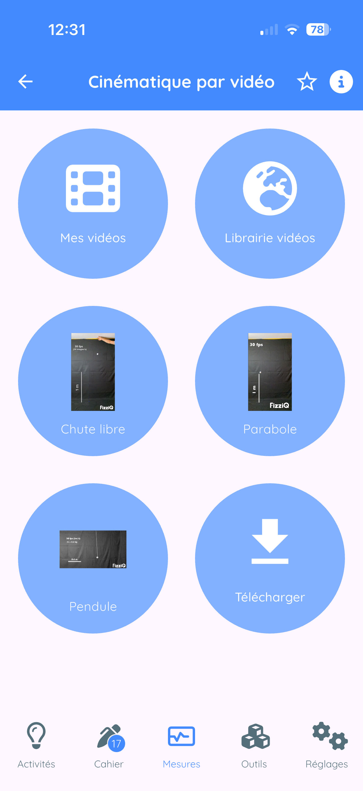
11.2 Video Kinematics
Concept
- Import or select a video
- Define the pixel-to-meter conversion scale
- Point the object position frame by frame
- FizziQ automatically calculates position, velocity, and acceleration
Video sources
| Option | Description |
|---|---|
| My videos | Videos from your library |
| Video library | ~30 HD educational videos prepared by FizziQ |
| Built-in videos | Free fall, Parabola, Pendulum (pre-installed) |
| Download | Import from an Internet URL |
Video library categories
- Sports: Pole vault, skiing, skating, tennis, diving, soccer...
- Mechanics: Free fall, uniform motion, accelerated motion, cycloid...
- Pendulums: Simple pendulum, Newton's pendulum
- Collisions: Impacts between objects
- Miscellaneous: Dye drop, SpaceX launches, vehicles...
Step 1: Define the scale
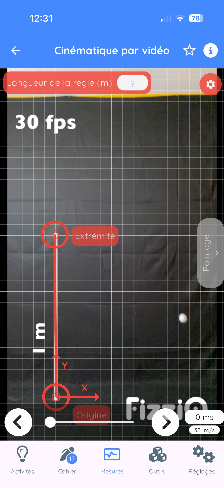
- Two circles flash: Origin and End
- Move the "Origin" circle to the start of your reference object
- Move the "End" circle to the end
- Tap on "Ruler length"
- Enter the actual value (e.g., 1 for 1 meter)
- Confirm
Advanced settings (gear button)
| Setting | Description |
|---|---|
| Frame rate | Modify if not automatically recognized |
| Sampling | Take 1 frame out of 2 or 3 |
| Detach origin | Place (0,0) elsewhere |
| Rotation | Rotate the image |
Step 2: Track the motion

- Bring the target to the object to track
- Tap on the screen to record the position
- The video advances to the next frame
- Repeat for each frame
Tracking screen buttons
| Button | Function |
|---|---|
| Trash | Delete all references |
| Camera | Take a photo of the trajectory |
| Eye | Hide/show references |
| Left/Right arrows | Navigate through video |
| Result | View calculated data |
Step 3: View results

| Category | Quantities | Description |
|---|---|---|
| Position | x, y | Horizontal and vertical position (m) |
| Velocity | Vx, Vy, V | Components and magnitude (m/s) |
| Acceleration | Ax, Ay, A | Components and magnitude (m/s2) |
| Rotation | alpha | Rotation angle (degrees) |
| Energy | (Ek, Ep, Em) | Kinetic, potential, mechanical energies (J) |
Tips for good analysis
- Use a tripod to stabilize the camera
- Film perpendicular to the plane of motion
- Place a ruler or reference object in the frame
- Use a contrasting background
- Light the scene properly
11.3 Chronophotography
Analyze a photo showing multiple successive positions of an object.
Access options
- My images: photo from your gallery
- Photo library: educational chronophotographs
- Create from video: convert a video
11.4 Video to Chronophotography Conversion

Access
- Tools tab
- Tap on Video Chrono
Settings
| Setting | Description |
|---|---|
| Frame rate (FPS) | Frames per second |
| Interval | Take 1 frame out of N (1 to 10) |
| Sensitivity | Motion detection (1 to 100) |
12. Experimentation Tools
12.1 Sound Synthesizer
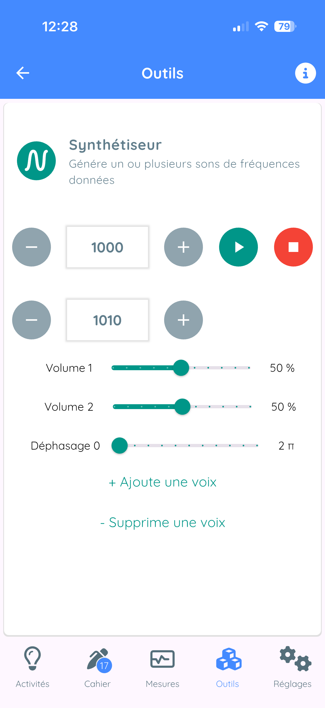
Concept
The synthesizer generates pure sine waves and allows you to superimpose up to 3 voices simultaneously.
Usage
- + and - buttons: adjust frequency (Hz)
- Play button: start the sound
- Red button: stop
- Volume slider: adjust intensity
Adding multiple voices
- Tap on "Add another voice"
- For each voice: frequency, volume, phase shift
Creating beats
- Add a second voice
- Set two slightly different frequencies (e.g., 440 Hz and 442 Hz)
- Beat frequency = |f1 - f2|
12.2 Sound Library
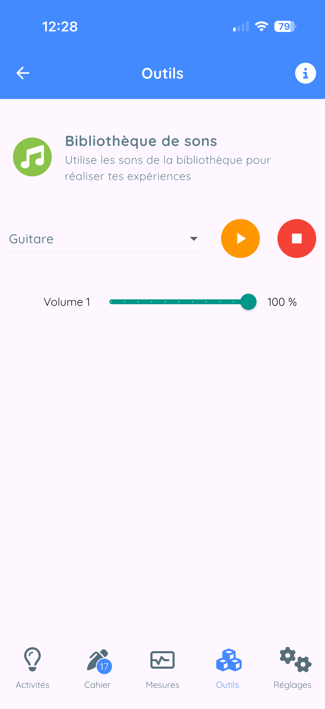
Collection of calibrated sounds ready to use:
- Musical notes and tuning forks
- Sounds for Doppler effect
- Sounds for Shepard effect
- Urban noises, sirens...
12.3 Color Synthesis
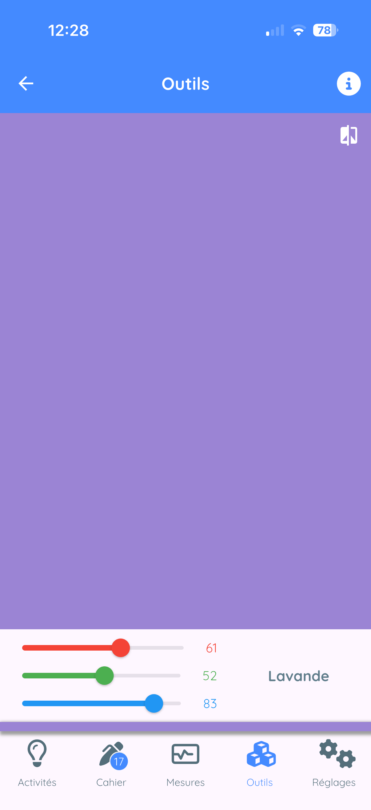
Additive synthesis (RGB)
Three sliders: Red (R), Green (G), Blue (B) from 0 to 255.
Experiments
- R(255) + G(255) + B(0) = Yellow
- R(255) + G(0) + B(255) = Magenta
- R(0) + G(255) + B(255) = Cyan
- All at 255 = White
- All at 0 = Black
12.4 Sound Stopwatch


Concept
Automatically measure time between two sound events.
Usage
- Set the sensitivity (detection threshold)
- Set the dead time (avoid rebounds)
- Tap on Arm
- First sound - the stopwatch starts
- Second sound - the stopwatch stops
Available stopwatch types
| Stopwatch | Detection |
|---|---|
| Sound | Sounds (claps, impacts...) |
| Motion | Acceleration |
| Light | Light variations |
| Magnetic | Magnetic field variations |
12.5 Triggers

Possible actions
- Delayed measurement: take a measurement after a delay
- Conditional recording: start/stop based on a condition
- Automatic capture: trigger a capture automatically
- Alarm: trigger a sound or vibration signal
Condition types
- Time-based: after a defined delay
- Sound: when sound exceeds a threshold
- Motion: when acceleration exceeds a threshold
- Light: when light changes
- Magnetic: when magnetic field varies
12.6 Scientific Calculator

Features
- Basic operations (+, -, x, /, %)
- Trigonometric functions (sin, cos, tan...)
- Logarithms (ln, log)
- Exponentials, powers, roots
- Constants (pi, e)
- Degrees/radians modes
13. AskFizziQ - The AI Assistant

13.1 Access
- Tools tab
- Tap on AskFizziQ
13.2 Features
- Scientific questions: physics, chemistry, life sciences
- Analysis help: attach observations
- Experiment suggestions: guided protocols
13.3 Response Levels
| Mode | Characteristics |
|---|---|
| Middle school | Simple vocabulary, analogies, ages 11-15 |
| High school | Mathematical formulas, rigor, ages 15-18 |
| Teacher | Technical language, pedagogical suggestions |
13.4 Attaching Observations
- Tap on the paperclip icon
- Check the observations to attach
- Confirm
- Type your question
- The AI analyzes your data
13.5 Best Practices
- Ask clear and precise questions
- Provide necessary context
- Verify important information
- Use AI as a help tool
14. External Bluetooth Sensors
14.1 Connecting Microcontrollers
You can connect an Arduino or micro:bit to FizziQ via Bluetooth Low Energy.
Data format
sensorName:valueExamples: tem:23.5 (temperature), hum:65 (humidity)
Recognized prefixes
| Prefix | Type | Unit |
|---|---|---|
| tem | Temperature | C |
| hum | Humidity | % |
| ten | Voltage | V |
| int | Current | A |
| pre | Pressure | hPa |
| lum | Luminosity | lux |
| co2 | CO2 | ppm |
| ph | pH | - |
Complete documentation: www.fizziq.org/connexion-de-capteurs-externes
14.2 FizziQ Connect
FizziQ Connect is a data acquisition box developed by the FizziQ team, based on M5Stack.
Advantages
| Criteria | FizziQ Connect | Traditional DAQ |
|---|---|---|
| Cost | Very low | High |
| Software | Free (FizziQ) | Paid license |
| Architecture | Open (Grove, I2C) | Proprietary |
| Pairing | Automatic | Configuration required |
Radio Mode (unique innovation)
Broadcasts measurements to all nearby smartphones simultaneously. Ideal for classroom demonstrations!
Compatible probes
- Waterproof temperature (-55C to +125C)
- Infrared thermometer (-70C to +380C)
- Light, distance, pH, CO2 sensors...
- Ammeter (-4 to +4 A)
14.3 Smartphone Connection
- In the Measurements screen, tap on the instrument name
- Select External sensors
- Tap on Refresh
- Select your device
- Sensors are automatically detected
15. Export and Sharing
15.1 PDF Export
- Open the card in full screen
- Share icon
- Select PDF
- Share or save
15.2 CSV Export
Universal text format compatible with Excel, LibreOffice, Google Sheets.
- Share icon
- Select CSV
15.3 Image Export
Share > Image menu - PNG capture of the graph.
15.4 FizziQ Files
- Native
.fizziqformat - Contains all data
- Can be reopened in FizziQ
15.5 Sharing Methods
- Email, Messaging (WhatsApp, Messenger...)
- AirDrop (iOS), Bluetooth
- Cloud (Google Drive, Dropbox, iCloud)
- QR Code (without Internet)
16. Activities and QR Codes
16.1 Activity Catalog
More than 100 activities ready to use.
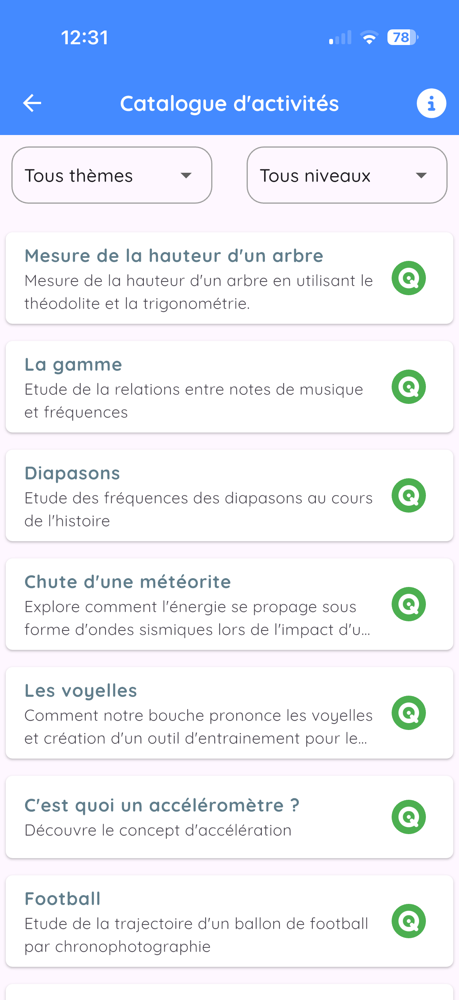
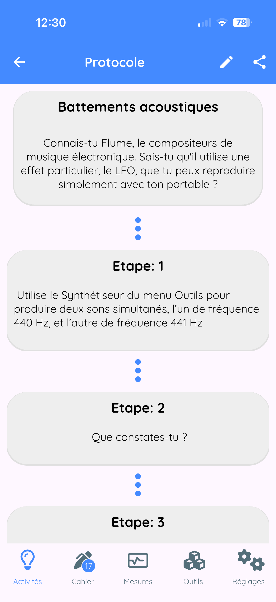
Difficulty levels
| Level | Color | Audience |
|---|---|---|
| Level 1 | Green | Middle school |
| Level 2 | Orange | Early high school |
| Level 3 | Red | Late high school / Higher education |
Available themes
Mechanics, Acoustics, Optics, Electricity, Thermodynamics...
16.2 Creating Your Own Activities
- Activities tab - +
- Select Create a new protocol
- Fill in: title, description, steps
- Save
16.3 Sharing an Activity
- Add to notebook
- Export to PDF
- Share as QR code (limit: 1200 characters)
16.4 Scanning an Activity QR Code
- Activities tab - +
- Select Scan a QR code
- Point the camera at the QR code
- The activity is added automatically
17. Settings and Customization


17.1 Data
| Setting | Description |
|---|---|
| Sampling | Acquisition frequency |
| Quadratic adjustment | For kinematics (high school) |
| Signal filtering | Exponential smoothing (intensity 1-99) |
17.2 App Settings
- Screen orientation: horizontal/vertical
- Sensor organization: by instrument or by theme
- Language: 20 languages available
17.3 Camera
- LED for colorimetry: turns on flash
- Copy photos: saves to gallery
- Front camera: uses selfie camera
17.4 Calibration
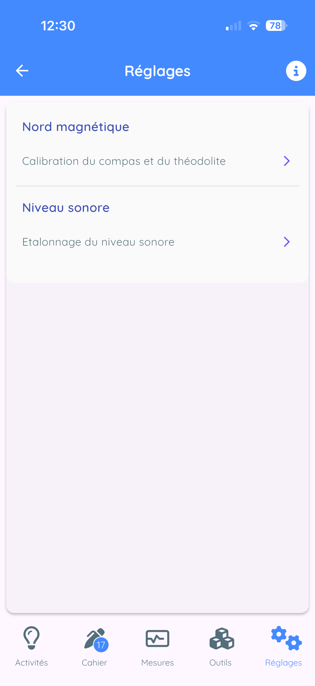
Magnetometer
Perform figure-8 rotations to recalibrate the compass.
Sound level meter
Use the slider to apply a dB offset.
17.5 System Status
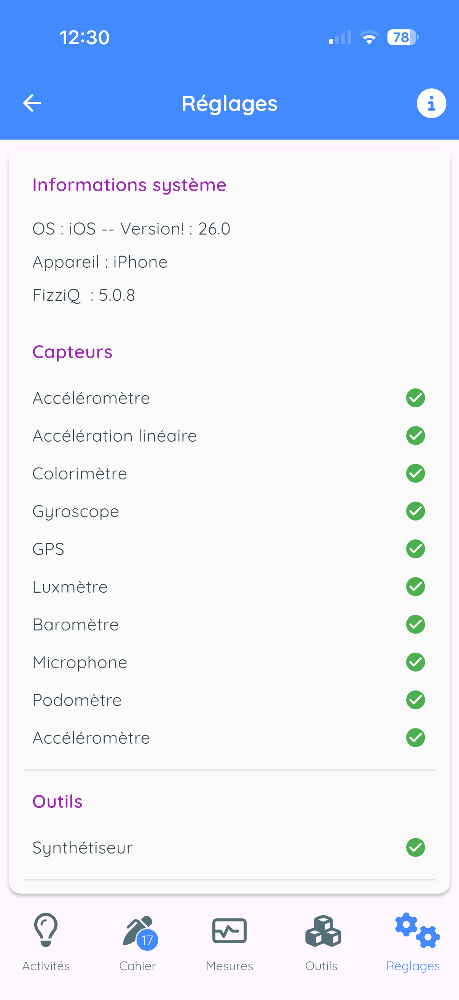
Displays: detected sensors, OS version, model, FizziQ version.
18. Tips and Tricks
18.1 Optimizing Measurements
Accelerometer
- Place the phone on a stable surface for zero
- Securely attach the phone to the moving object
- Use a shock-resistant case for impacts
Sound level meter
- Move away from sources of parasitic noise
- Do not cover the microphone
- Calibrate with a reference sound
Colorimeter
- Ensure constant lighting
- Avoid reflections
- Use a white background
GPS
- Be outdoors with clear sky view
- Wait for accuracy to stabilize
- Avoid urban canyons
18.2 Saving Battery
- Close FizziQ when not in use
- Reduce sampling frequency
- Disable GPS when not needed
18.3 Organizing Your Notebook
- Give explicit titles
- Add text notes
- Create a notebook per theme
- Delete unnecessary measurements
18.4 Troubleshooting
| Problem | Solution |
|---|---|
| Sensor not working | Check permissions, restart the app |
| Incorrect values | Calibrate sensor, check orientation |
| App crashes | Update, free memory |
| Bluetooth not finding | Check sensor is on, move closer |
| Inaccurate GPS | Wait outdoors, clear sky view |
Appendices
A. Shortcuts and Gestures
| Gesture | Action |
|---|---|
| Single tap | Select |
| Long press | Context menu / Reorganize |
| Swipe left | Delete |
| Pinch | Zoom out |
| Spread | Zoom in |
| Double tap | Reset zoom |
| Drag | Move / Navigate |
B. Useful Formulas
Mechanics
- Average velocity: v = delta_x / delta_t
- Acceleration: a = delta_v / delta_t
- Free fall: h = (1/2)gt^2
- Simple pendulum: T = 2*pi*sqrt(L/g)
Acoustics
- Speed of sound: v = d/t (approx. 340 m/s in air at 20C)
- Frequency: f = 1/T
- Beats: f_beat = |f1 - f2|
C. Contact and Resources
- Website: www.fizziq.org
- Protocols: www.fizziq.org/activites
- Support: info@fizziqlab.org
Frequently Asked Questions
Is FizziQ free?
Yes, FizziQ is 100% free, ad-free, and has no in-app purchases. No account is required.
Does FizziQ work without internet?
Yes, FizziQ works entirely offline. A connection is only needed to share files or use the AskFizziQ assistant.
Which devices are compatible?
FizziQ works on iPhone, iPad, Android smartphones, and tablets. Available sensors depend on your device.
How do I calibrate a sensor?
Go to Settings, then Calibration, select the sensor, and follow the on-screen instructions (usually place the device flat and tap Calibrate).
Why does my sensor show incorrect values?
Try calibrating the sensor. Check that the device is correctly oriented. Some sensors require specific conditions (GPS outdoors, light meter without shadow, etc.).
How do I export my data?
In the experiment notebook, tap Share, choose the format (CSV, PDF, or FizziQ file), and select the destination (email, cloud, etc.).
How do I use video kinematic analysis?
In Tools, then Kinematics, import a video, calibrate the scale, point the object position frame by frame, and the data appears in the notebook.
Is FizziQ Connect included?
The FizziQ app is free and includes FizziQ Connect support. The FizziQ Connect box is separate hardware that needs to be acquired.
What school level is it for?
FizziQ is designed for science education from middle school to university. More than 100 ready-to-use activities are available at fizziq.org/activites.
How do I contact support?
Send an email to info@fizziqlab.org or visit www.fizziq.org for more resources.
What is the difference between FizziQ and other apps like Phyphox or Physics Toolbox?
FizziQ, Phyphox, and Physics Toolbox are all excellent experimental science apps. Here is what distinguishes FizziQ:
- Integrated experiment notebook: document your experiments with text, photos, and data in a single document exportable to PDF
- Video kinematic analysis: frame-by-frame tracking to study motion
- FizziQ Connect: extension with external Bluetooth sensors (exclusive to FizziQ)
- Ready-to-use protocols: 100+ educational activities on fizziq.org
- AskFizziQ: integrated AI assistant to guide experiments
- Designed in France with the La main a la pate Foundation
All these apps are free and complementary depending on your educational needs.